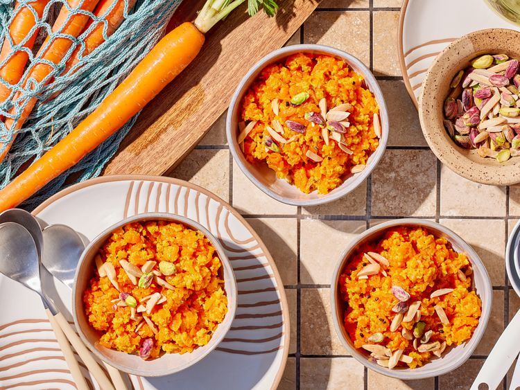

Carrot-Halwa
Home Page

Description
Carrot Halwa, also known as *Gajar ka Halwa* in Hindi, is a popular Indian dessert
made from grated carrots, milk, sugar, and ghee (clarified butter). The dish is rich,
aromatic, and deliciously sweet, often flavored with cardamom and garnished with nuts
like cashews, almonds, and raisins. The grated carrots are slow-cooked in milk until
they soften and absorb the flavors, resulting in a thick, pudding-like consistency. The
sugar is added towards the end of cooking, making the halwa sweet and indulgent. It’s
typically served warm or at room temperature and is a favorite during festive occasions
and winter months. Carrot Halwa is not only delicious but also packed with nutrients from
the carrots, making it a sweet yet wholesome treat.
Ingredients
- 8 cups shredded carrots
- 8 cups whole milk
- 1 cup sugar
- 24 green cardamom pods or 1 teaspoon ground cardamom
- 6 tablespoons vegetable oil
- 1/4 cup slivered almonds, toasted
- 1/4 cup dry- roasted pistachio nuts
Steps
- Combine carrots, milk, and sugar in a 6- to 8-qt. Dutch oven; bring to a boil over high heat, stirring occasionally.
- Reduce heat to medium; cook, stirring occasionally, until liquid has evaporated, about 1 hour.
- Meanwhile, use a mortar and pestle or a rolling pin to break open cardamom pods. Coarsely crush seeds, discarding the shells. (If using ground cardamom, skip this step.)
- Heat oil in a very large skillet over medium-high heat. Cook half of cardamom until fragrant, about 30 seconds. Add carrot mixture and cook, stirring constantly, until thick and jammy, about 15 minutes. Remove from heat.
- Stir in remaining cardamom. Sprinkle with almonds and pistachios just before serving. (Chill in an airtight container up to 5 days; freeze up to 3 months.)